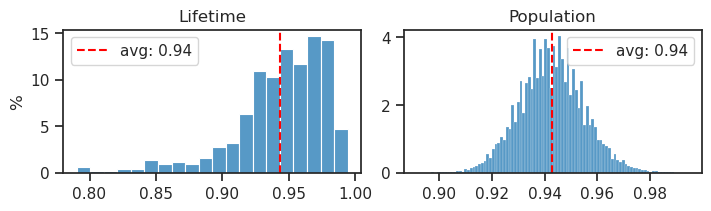

(02) DOVES—PoisMLP—0#
Motivation: Amort: MLP encoder. Device = cuda:0
Show code cell source
# HIDE CODE
import os, sys
from IPython.display import display
# tmp & extras dir
git_dir = os.path.join(os.environ['HOME'], 'Dropbox/git')
extras_dir = os.path.join(git_dir, 'jb-vae/_extras')
fig_base_dir = os.path.join(git_dir, 'jb-vae/figs')
tmp_dir = os.path.join(git_dir, 'jb-vae/tmp')
# GitHub
sys.path.insert(0, os.path.join(git_dir, '_PoissonVAE'))
from figures.fighelper import *
from vae.train_vae import *
# warnings, tqdm, & style
warnings.filterwarnings('ignore', category=DeprecationWarning)
from rich.jupyter import print
%matplotlib inline
set_style()
device_idx = 0
device = f'cuda:{device_idx}'
model_type = 'poisson'
Build model + trainer#
cfg_vae, cfg_tr = default_configs('DOVES', model_type, 'mlp+b|lin')
print(f"VAE:\n{cfg_vae}\n\nTrainer:\n{cfg_tr}")
VAE: {'dataset': 'DOVES', 'n_ch': 16, 'n_latents': 512, 'prior_clamp': -3.0, 'prior_log_dist': 'uniform', 'rmax_q': 1.0, 'enc_type': 'mlp', 'dec_type': 'lin', 'enc_bias': True, 'dec_bias': False} Trainer: {'temp_anneal_portion': 1.0, 'temp_anneal_type': 'exp', 'temp_start': 1.0, 'temp_stop': 0.05, 'lr': 0.005, 'batch_size': 1000, 'epochs': 3600, 'optimizer_kws': {'weight_decay': 0.0}, 'grad_clip': 500}
vae = MODEL_CLASSES[model_type](CFG_CLASSES[model_type](**cfg_vae))
tr = TrainerVAE(vae, ConfigTrainVAE(**cfg_tr), device=device)
vae.print()
print(f"{vae.cfg.name()}\n{tr.cfg.name()}_({vae.timestamp})\n")
tr.show_schedules()
+-------------+------------+ | Module Name | Num Params | +-------------+------------+ | PoissonVAE | 2.4 Mil | | --- | --- | | enc | 2.1 Mil | | fc_enc | 131.6 K | | fc_dec | 131.1 K | +-------------+------------+
poisson_uniform_c(-3)_rmax(1)_DOVES_z-512_k-16_<mlp+b|lin> mc_b1000-ep3600-lr(0.005)_beta(1:0x0.5)_temp(0.05:exp-1)_gr(500)_(2024_05_05,08:43)

print(vae)
PoissonVAE( (mse): MSELoss() (enc): ResDenseLayer( (fc1): Linear(in_features=256, out_features=4096, bias=True) (fc2): Linear(in_features=4096, out_features=256, bias=True) (layer_norm): LayerNorm((256,), eps=1e-05, elementwise_affine=True) (drop): Dropout(p=0.1, inplace=False) (relu): ReLU() ) (fc_enc): Linear(in_features=256, out_features=512, bias=True) (fc_dec): Linear(in_features=512, out_features=256, bias=False) )
vae.fc_dec.bias, vae.fc_enc.bias.shape
(None, torch.Size([512]))
Train#
# comment = f"..._{tr.cfg.name()}"
comment = tr.cfg.name()
tr.train(comment=comment)
epoch # 3600, avg loss: 164.413077: 100%|█████████████████████| 3600/3600 [1:09:20<00:00, 1.16s/it]
## Was: 1800 epochs / batch = 500
epoch # 1800, avg loss: 164.791712: 100%|█████████████████████| 1800/1800 [1:08:21<00:00, 2.28s/it]
## Was: 3600 epochs / batch = 1000
epoch # 3600, avg loss: 164.413077: 100%|█████████████████████| 3600/3600 [3:20:09<00:00, 3.34s/it]
## Was: 1200 epochs / batch = 1000
epoch # 1200, avg loss: 164.852377: 100%|███████████████████████| 1200/1200 [20:23<00:00, 1.02s/it]
Eval#
Loss vld (freeze)#
data, loss, rates = tr.validate()
_loss = {k: v.mean() for k, v in loss.items()}
_loss['tot'] = _loss['mse'] + _loss['kl']
print(_loss)
{'mse': 134.39989, 'kl': 29.64493, 'kl_diag': 0.05739137, 'tot': 164.04482}
Identify dead neurons#
ax = sns.histplot(tonp(vae.log_rate.squeeze()))
ax.set_yscale('log')

dead_thres = 0.01
dead = np.logical_or(
loss['kl_diag'] < dead_thres,
tonp(vae.log_rate.squeeze()) > -0.5
)
dead.sum()
7
bins = np.linspace(0, 91, 92)
ax = sns.histplot(loss['kl_diag'][~dead] * 1000, bins=bins, color='dimgrey', label='alive')
sns.histplot(loss['kl_diag'][dead] * 1000, bins=bins, color='r', label='dead', ax=ax)
ax.axvline(dead_thres * 1000, color='r', ls='--', alpha=0.6)
ax.locator_params(axis='x', nbins=11)
ax.legend()
plt.show()

Spike counts#
lifetime, population, percents = sparse_score(data['z'][:, ~dead], cutoff=0.05)
print(percents)
{'0': 93.1, '1': 6.0, '2': 0.7, '3+': 0.2}
fig, ax = create_figure(1, 1, (4.7, 2.8))
max_val = float(list(percents.values())[0])
ax.set(
xlabel='Spike count',
ylabel='Portion [%]',
ylim=(0, (np.ceil(max_val / 10) + 1) * 10),
)
colors = ['tomato' if lbl == '0' else 'dimgrey' for lbl in percents]
bars = ax.bar(percents.keys(), percents.values(), color=colors)
for bar in bars:
y = bar.get_height()
x = bar.get_x() + 1.3 * bar.get_width() / 2
plt.text(x, y + 1, f'{y:0.1f}%', ha='center', va='bottom')
ax.locator_params(axis='y', nbins=5)
ax.grid()
plt.show()
fig, axes = create_figure(1, 2, (7, 2), layout='constrained')
sns.histplot(lifetime, stat='percent', ax=axes[0])
sns.histplot(population, stat='percent', ax=axes[1])
for i, x2p in enumerate([lifetime, population]):
_a, _med = np.nanmean(x2p), np.nanmedian(x2p)
# axes[i].axvline(_med, color='g', ls='--', label=f'median: {_med:0.2f}')
axes[i].axvline(_a, color='r', ls='--', label=f'avg: {_a:0.2f}')
add_legend(axes)
axes[0].set(title='Lifetime', ylabel='%')
axes[1].set(title='Population', ylabel='')
plt.show()

tot_nspks = data['z'][:, ~dead].sum(1)
tot_firing = (data['z'][:, ~dead] > 0).mean(1)
min(tot_nspks), max(tot_nspks)
(13.0, 90.0)
a = np.floor(min(tot_nspks) / 10) * 10
b = np.ceil(max(tot_nspks) / 10) * 10
fig, axes = create_figure(1, 2, (9, 2), layout='constrained')
sns.histplot(tot_nspks, bins=np.linspace(a, b, int(b - a) + 1), kde=True, stat='percent', ax=axes[0])
sns.histplot(tot_firing, bins=np.linspace(0, 1.0, 101), kde=True, stat='percent', ax=axes[1])
_a = tot_nspks.mean()
axes[0].axvline(_a, color='r', ls='--', label=f'avg = {_a:0.1f} ')
_a = tot_firing.mean()
axes[1].axvline(_a, color='r', ls='--', label=f'avg = {_a:0.3f} ')
axes[0].axvline(vae.cfg.n_latents, color='k', ls='--')
axes[1].axvline(1.0, color='k', ls='--')
axes[0].set_title('total # spks per stimulus')
axes[1].set(title='portion active neurons per stimulus', ylabel='')
for ax in axes.flat:
ax.axvline(0, color='k', ls='--')
ax.legend()
plt.show()
Cosine sim enc/dec#
with torch.inference_mode():
w_dec = tr.model.fc_dec.weight.detach().data
w_enc = tr.model.fc_enc.weight.detach().data
w_dec = w_dec[:, ~dead]
w_enc = w_enc[~dead]
cos_sim = F.cosine_similarity(w_dec.T, w_enc)
slope = torch.einsum('ic, ci -> c', w_dec, w_enc)
slope /= torch.norm(w_enc, dim=1).pow(2)
fig, axes = create_figure(1, 2, (7, 2), layout='constrained')
sns.histplot(tonp(cos_sim), label='cosine sim', ax=axes[0])
sns.histplot(tonp(slope), label='slope', ax=axes[1])
_avg = cos_sim.mean().item()
axes[0].axvline(_avg, color='r', ls='--', label=f'avg = {_avg:0.3g}')
_avg = slope.mean().item()
axes[1].axvline(_avg, color='r', ls='--', label=f'avg = {_avg:0.3g}')
for ax in axes.flat:
ax.legend()
axes[1].set_ylabel('')
plt.show()
Plot enc/dec weights#
vae.show(dpi=250, order=np.argsort(tonp(vae.log_rate.squeeze())));
vae.show(dpi=150, order=np.argsort(loss['kl_diag']));
Some more distributions#
prior_rates = tonp(vae.log_rate)[:, ~dead].ravel()
mu, sd = sp_stats.norm.fit(prior_rates)
rv = sp_stats.norm(mu, sd)
xs = np.linspace(
rv.ppf(1e-6),
rv.ppf(1 - 1e-6),
1000,
)
pdf = rv.pdf(xs)
fig, ax = create_figure()
sns.histplot(prior_rates, stat='density', bins=50, kde=True, element='bars', label='log prior rates', ax=ax)
ax.plot(xs, pdf, color='r', lw=2, ls='--', label='lognorm fit')
add_legend(ax)
plt.show()
ks = sp_stats.kstest(
rvs=prior_rates,
cdf=rv.cdf,
alternative='two-sided',
)
print(ks)
KstestResult(statistic=0.035075594465903026, pvalue=0.5514531588602861, statistic_location=-2.5101538, statistic_sign=-1)
Loggabor analysis#
from analysis.loggabor import fit_loggabor
from figures.theta import plot_theta
from figures.imgs import plot_weights
results = fit_loggabor(tr, verbose=True)
87%|█████████▌ | 446/512 [00:16<00:01, 37.12it/s]
warning: zero norm model with pars= Parameters([('x_pos', <Parameter 'x_pos', value=7.816968580605305, bounds=[0:16]>), ('y_pos', <Parameter 'y_pos', value=13.781693690274917, bounds=[0:16]>), ('theta', <Parameter 'theta', value=1.5677408452179895, bounds=[-1.5707963267948966:1.5707963267948966]>), ('sf_0', <Parameter 'sf_0', value=0.1707762482595231, bounds=[0.001:inf]>), ('phase', <Parameter 'phase', value=-0.8110129515459958, bounds=[-inf:inf]>), ('B_sf', <Parameter 'B_sf', value=0.6355128215161644, bounds=[0.001:inf]>), ('B_theta', <Parameter 'B_theta', value=0.04725125514516859, bounds=[0.001:inf]>)])
97%|██████████▋| 495/512 [00:18<00:00, 25.19it/s]
warning: zero norm model with pars= Parameters([('x_pos', <Parameter 'x_pos', value=6.996962367077853, bounds=[0:16]>), ('y_pos', <Parameter 'y_pos', value=9.340253452633416, bounds=[0:16]>), ('theta', <Parameter 'theta', value=0.42584761207445165, bounds=[-1.5707963267948966:1.5707963267948966]>), ('sf_0', <Parameter 'sf_0', value=0.3800925839891155, bounds=[0.001:inf]>), ('phase', <Parameter 'phase', value=-2.7660764611043254, bounds=[-inf:inf]>), ('B_sf', <Parameter 'B_sf', value=0.04197212356529556, bounds=[0.001:inf]>), ('B_theta', <Parameter 'B_theta', value=0.04802397030355021, bounds=[0.001:inf]>)])
100%|███████████| 512/512 [00:18<00:00, 27.72it/s]
results.loc[results['sf_0'] > 10, 'sf_0'] = np.nan
results.iloc[np.logical_or(dead, np.isnan(results['theta']))] = np.nan
results.describe()
| x_pos | y_pos | theta | sf_0 | phase | B_sf | B_theta | theta_deg | r_prior | |
|---|---|---|---|---|---|---|---|---|---|
| count | 501.000000 | 501.000000 | 501.000000 | 494.000000 | 501.000000 | 501.000000 | 501.000000 | 501.000000 | 501.000000 |
| mean | 7.433378 | 7.439363 | 0.013156 | 0.285349 | -0.100823 | 0.603231 | 0.293187 | 92.011255 | 0.085821 |
| std | 3.699381 | 4.185905 | 0.984917 | 0.243805 | 1.096619 | 0.814751 | 0.372136 | 47.983501 | 0.054899 |
| min | 0.357653 | 0.000000 | -1.570796 | 0.065785 | -7.320454 | 0.069076 | 0.055431 | 0.339810 | 0.007112 |
| 25% | 4.799791 | 3.792889 | -0.912679 | 0.228742 | -0.669857 | 0.423645 | 0.134166 | 53.056081 | 0.046908 |
| 50% | 7.341398 | 7.599455 | -0.018037 | 0.247853 | -0.166980 | 0.485517 | 0.211695 | 90.000079 | 0.073777 |
| 75% | 10.240226 | 11.016710 | 0.910608 | 0.281841 | 0.489320 | 0.586363 | 0.314360 | 129.622320 | 0.108770 |
| max | 14.579519 | 15.469686 | 1.570796 | 3.121440 | 6.911296 | 13.152300 | 5.928021 | 179.940123 | 0.361897 |
fig, _ = plot_theta(results, ylim=(-0.0, 0.4))
pal = {'axial': 'dimgrey', 'oblique': 'tomato'}
fig, axes = create_figure(1, 2, (8, 4), layout='constrained')
sns.scatterplot(data=results, y='sf_0', x='theta_deg', hue='label', palette=pal, ax=axes[0])
sns.scatterplot(data=results, y='sf_0', x='theta_deg', hue='label', palette=pal, ax=axes[1])
axes[1].set(ylim=(0.06, 0.49), ylabel='')
move_legend(axes[1])
plt.show()
rates_axial = results.loc[(results['label'] == 'axial') & ~dead, 'r_prior'].values
rates_oblique = results.loc[(results['label'] == 'oblique') & ~dead, 'r_prior'].values
print(f"{sp_stats.mannwhitneyu(rates_axial, rates_oblique, method='auto')}")
MannwhitneyuResult(statistic=14764.0, pvalue=1.5777977765075965e-24)
a, b = len(rates_axial), len(rates_oblique)
a / (a+b), b / (a+b)
(0.5229540918163673, 0.47704590818363274)
order = np.argsort(results['sf_0'].values)
_ = tr.model.show(order=order)
w_dec = tonp(tr.model.fc_dec.weight.data)
w_dec = w_dec.T.reshape(-1, 16, 16)
ids = np.argsort(results['sf_0'].values)
plot_weights(w_dec[ids[:32]], nrows=2, dpi=130)
plt.show()
plot_weights(w_dec[ids[-32:]], nrows=2, dpi=130)
plt.show()